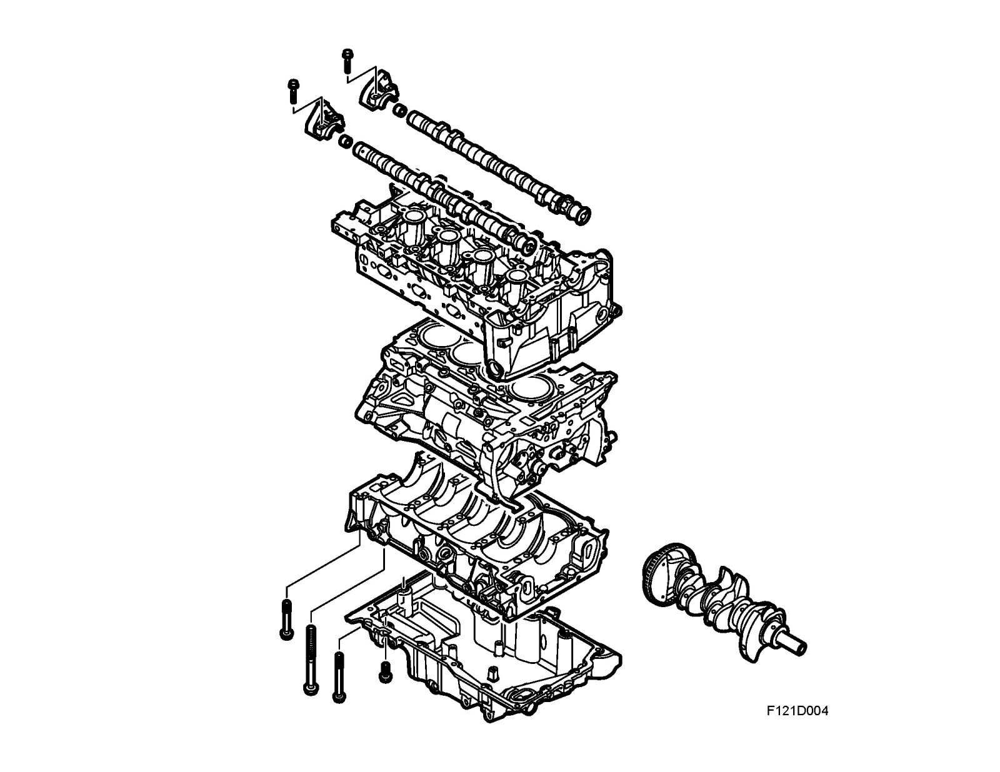
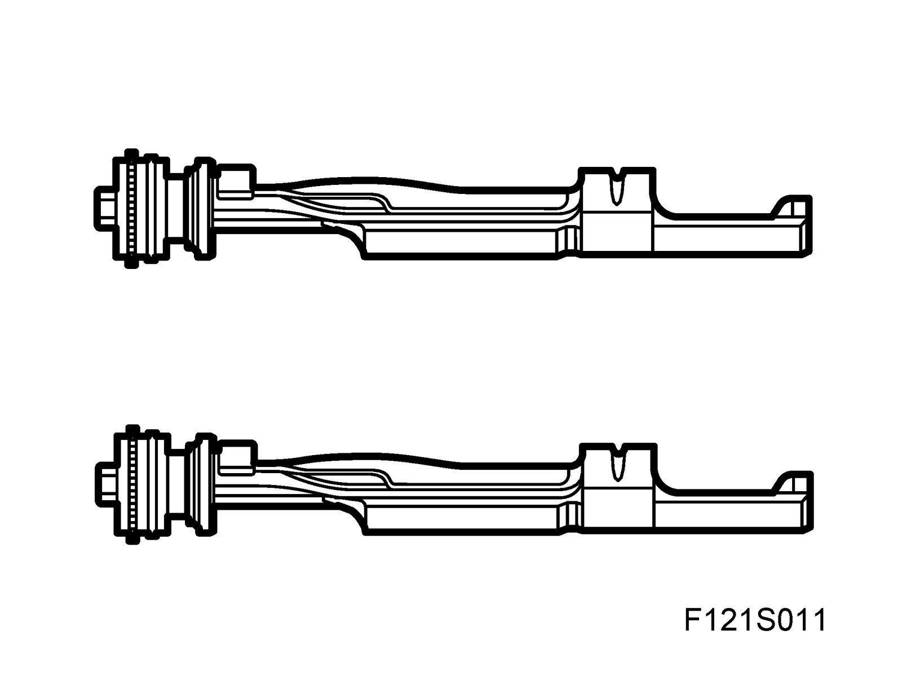
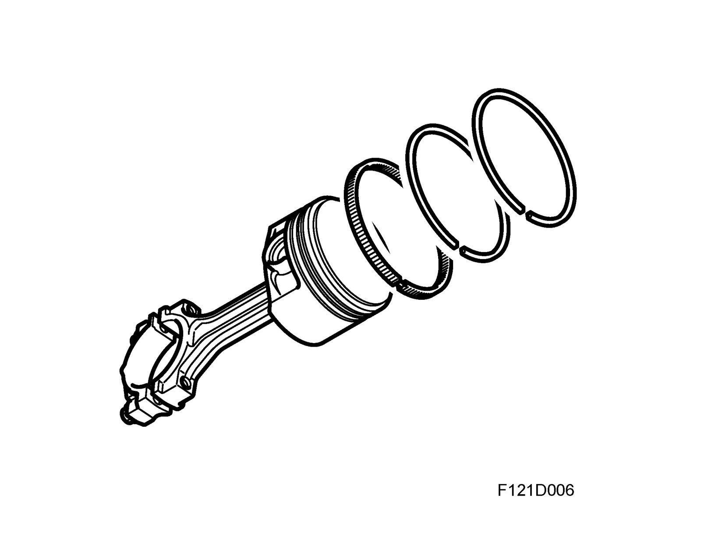
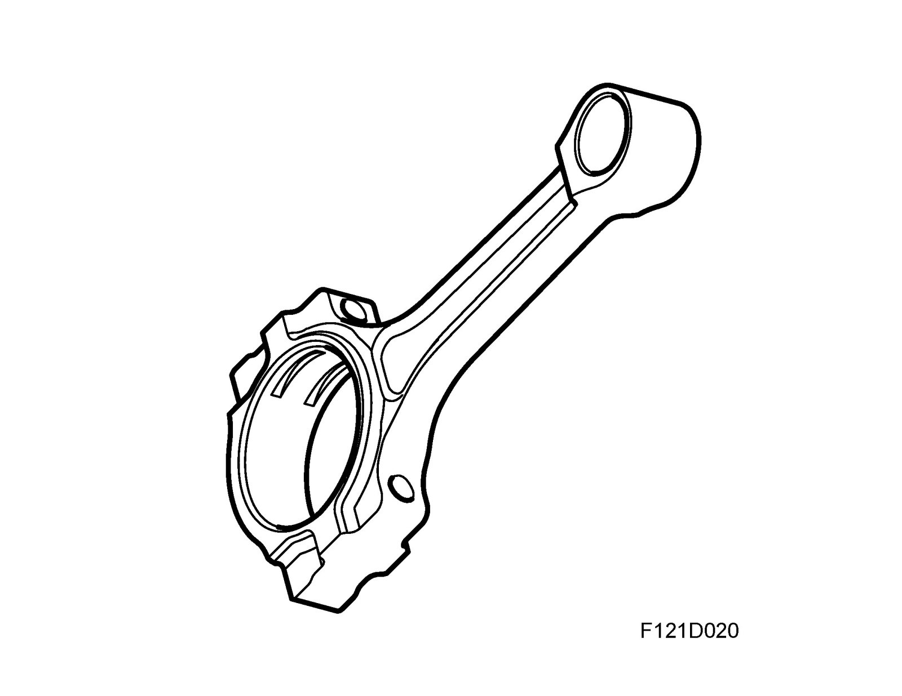
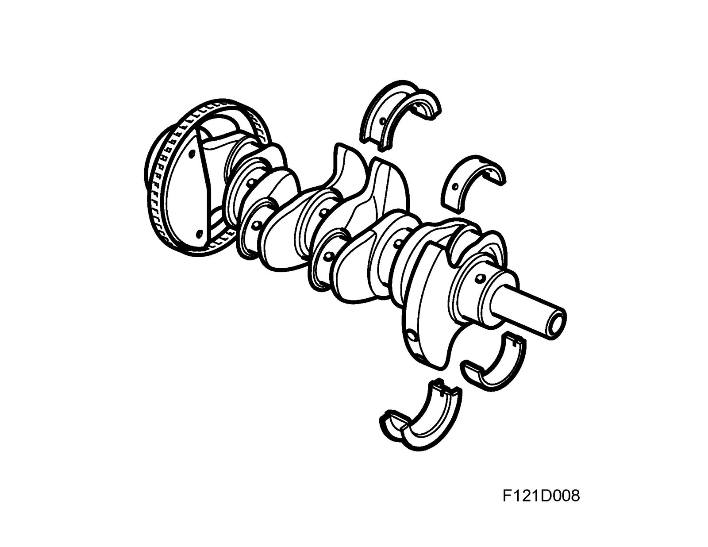
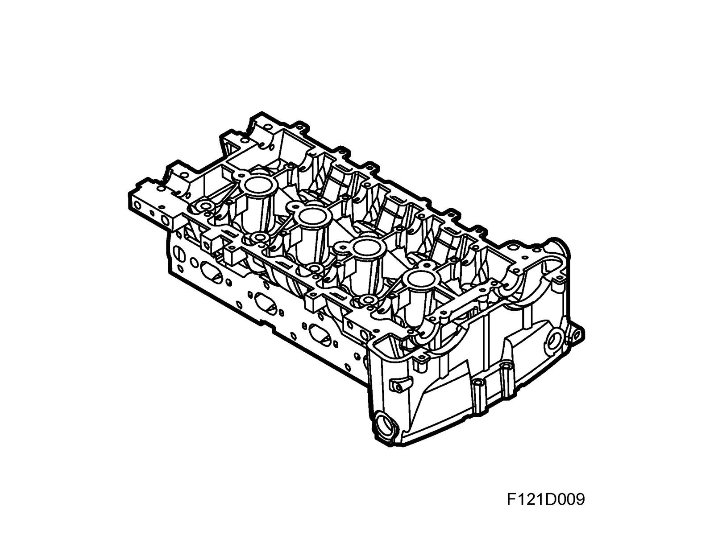
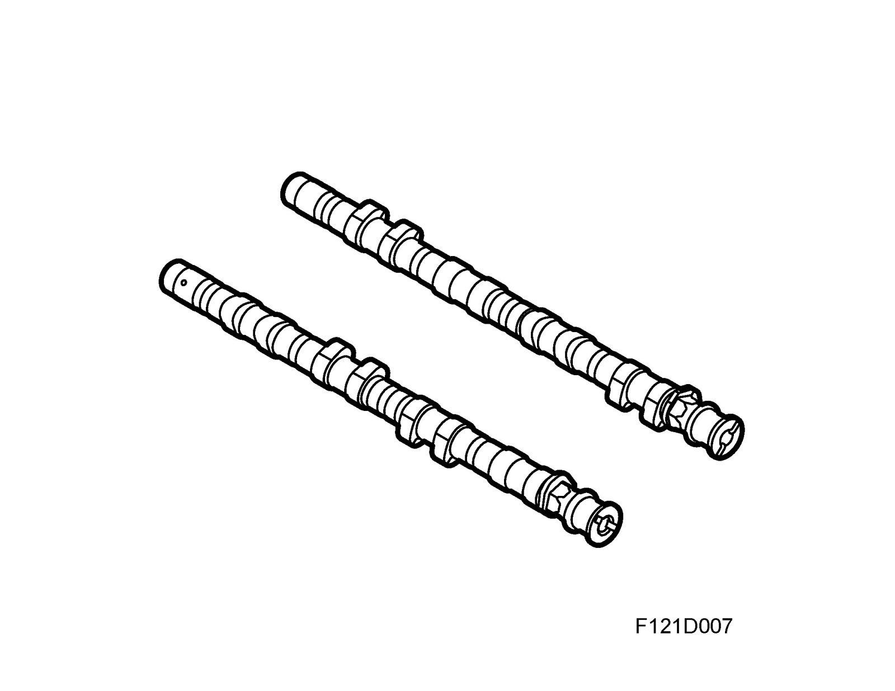
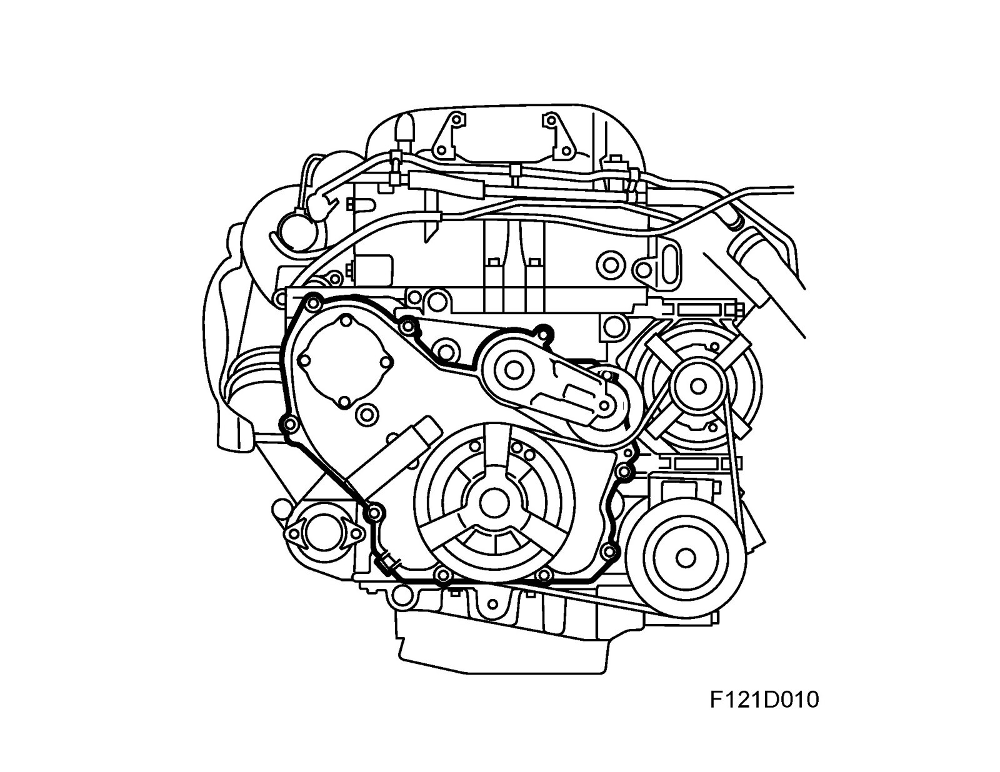

Cylinder Block Assembly: Description and Operation
Engine block
B207L is a water-cooled, 4-cylinder, 2.0 litre petrol driven in-line engine of aluminum with 4 valves per cylinder, 2 overhead camshafts and 2 balance shafts integrated in the cylinder block. It is crossflow type, i.e. the inlet is located on one side of the combustion chamber and the exhaust on the opposite side. Steel non-exchangeable cylinder liners are pressed into the engine block. The five main bearings are integrated in one common bed plate.
For low sound levels and compact size, the coolant pump is integrated in the balancer shaft chain circuit. The power steering pump and vacuum pump are driven directly via the camshafts. The engine is transversely mounted and is inclined 10° to the rear in the engine bay. The 2-litre capacity provides high torque even at low engine speeds, which is advantageous when driving in normal traffic conditions.
Balancer shafts

The balance shafts are intended to absorb vibration and second order forces from the moving parts of the engine and at the same time reduce the level of unwanted engine noise. They are driven via a separate chain circuit in the timing cover. See Balancer shafts.
Cylinder block
The light alloy cylinder block is manufactured in one piece with press-fit cylinder bores of steel. Passageways for the lubricating system are also drilled inside the block. The main bearing caps are not separate but integrated in a common bed plate. There are two tunnels integrated in the block for the balancer shafts. Loose non-exchangeable bearing bushings are press-fitted for the inner bearing seats.
Pistons

The light alloy pistons have grooves for two compression rings and one oil scraper ring. The upper compression ring is plane type and nitride hardened. The lower compression ring is phosphate coated and has oil scraper properties. The oil scraper ring is in three parts and nitride hardened. The pistons are tin plated and the gudgeon pins nitride hardened. An arrow on the piston crown indicates the position for fitting (arrow pointing to camshaft drive end). It is essential that the pistons are fitted correctly because the gudgeon pin hole is offset 0.8 mm towards the exhaust side. This has been introduced to reduce the negative effect of axial forces on cylinder wear. The pistons are cooled from below with oil sprayed through a nozzle fitted in the bottom of the cylinder block.
Connecting rods

The forged alloy steel connecting rods have bushings to house the gudgeon pins. The gudgeon pin bushing and bearing shells for the connecting rod bearings are exchangeable. The gudgeon pin is floating mounted in the piston and connecting rod. The big end of the connecting rod is split during manufacture in a process where a laser first makes a notch in the goods across the hole, after which a press tool is applied to split the big end. The hole is subsequently machined to the correct dimension. This procedure provides a perfect fit between the cap and the connecting rod. The axial movement of the gudgeon pin is limited by circlips fitted into the gudgeon pin hole.
Crankshaft assembly

The forged crankshaft has ground, induction-hardened bearing journals. This provides a hard surface to protect against wear. The crankshaft has five main bearings integrated in one common bedplate, the middle bearing acting also as thrust bearing. Passageways are drilled in the shaft for lubricating oil. All the main bearing shells are exchangeable.
Cylinder head

The precision cast light-alloy cylinder head is bolted to the cylinder block. The domed combustion chambers have 4 valves per cylinder and centrally situated spark plugs. This improves the flow of gases in the cylinders and provides more efficient combustion, making the engine more efficient. Openings for the injectors are also situated in the inlet ports to provide an optimum injection pattern.
The design allows a very shallow cylinder head, 129.0 mm, which is space-saving and low-weight.
Camshafts

Via roller bearings, the camshafts act on rocker arms that are supported in ball cups at one end, constituting the upper end of the hydraulic valve clearance balancers, and press against the valve stems at the other end. The hydraulic valve clearance balancers maintain the clearance between the camshaft and the rocker arm/roller bearing close to zero. Consequently, they do not take part in any movement. This design requires a low level of friction for its movement. See also Camshaft drive.
Timing cover

The timing cover is designed to the shape of the cylinder block. The oil pump is mounted in the timing cover.